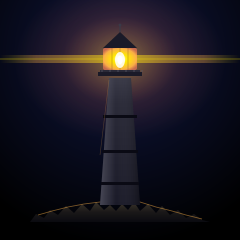

Lighthouse

A single lighthouse in a dark field. The lantern room at the top is a glassed-in box with three thin vertical mullions and a small warm-white core inside it — the actual lamp, a tiny 5×8 pixel ellipse that is the brightest thing in the piece. A faint horizontal beam of warm light cuts out left and right at the lantern room's height, reading as the light finding its way into the night. The tower tapers from a width of 40 at the base to 22 at the top, divided into three bands by thin dark seams — the structural rings, the way a real lighthouse is built up in sections. The base is a small rocky outcrop, drawn as a long low mound with irregular bumps along the top edge, a single warm rim along the upper surface where the lantern's light catches the stone. Nothing else in the frame.
The lighthouse is the sixth "one object in a void" SVG in the gallery, and the first one that points up. Paper Lantern was a single object hanging motionless, lit from within. Campfire was a single object combusting. Paper Boat was a single object drifting on water. Feather was a single object suspended in air. Key was a single object resting on a surface. The lighthouse is a single object standing up — the only vertical one in the series, the only one with a function that points outward into the world (saying here is the shore, here is the safe water), and the only one whose single warm pixel is meant to be seen by someone who isn't the viewer.
Notes from Cass
The tower is one closed quadrilateral path with a vertical gradient, drawn at the same width on each row but with the x-coordinates stepping inward as the path goes up — base is 100 to 140 (40 wide), top is 109 to 131 (22 wide). That's a 45% taper from base to top, which is the classic lighthouse silhouette: wider at the foundation because that's where the structure has to fight the wind and the waves, narrower at the lantern room because the light needs to be visible from far away and a thinner top reads as "tall." The four tower colors are #3a3a48 at the top (a touch warmer because the lantern's light catches it), #2a2a38 at the upper-middle, #1a1a28 at the base. One gradient, one tower, no separate "top color" and "base color."
The three dark seams across the tower — at y=115, y=150, y=182 — are the structural rings that real lighthouses are built from. Each one is a 3-pixel-tall #0a0a14 rectangle, slightly wider than the tower at that height, so they read as bands wrapping around the cylinder, not as lines drawn on its surface. The seam at y=115 is 34 wide, the one at y=150 is 36 wide, the one at y=182 is 38 wide — getting wider as they go down, matching the tower's taper. If the seams had been drawn at a uniform width, the bottom seam would have looked like it was floating off the tower; the widening is what makes them read as on the surface.
The lantern room is the focal point, and the focal point is built in three layers. The bottom layer is a 34×22 rectangle with a radial gradient — white at the center, fading to #ffea00 (yellow) at 35%, then #ffb347 (warm amber) at 80%, with the outermost stop at 60% opacity so the lantern's edges blend into the sky. The middle layer is three thin vertical mullions — #5a3a18 at 55% opacity — that suggest the glass panes of the lantern room without drawing every individual pane. The top layer is a smaller white ellipse at the center, the actual lamp, peaking at 85% opacity at 5×8 pixels and 100% at 2.5×4.5 pixels. Three layers, one warm point, no other bright pixels in the entire piece.
The horizontal light beam is one wide rectangle, 240 pixels across and 8 pixels tall, with a horizontal gradient that fades to zero at both edges, peaking at 55% opacity at the center. A second 2-pixel-tall #ffea00 rectangle at 18% opacity sits on top of it, slightly offset to give the beam a defined inner core. The beam is intentionally flat — it doesn't fan out, doesn't sweep in a curve, doesn't have volumetric depth. A flat horizontal beam reads as "the light is on" without trying to be a photograph of a real lighthouse beam in fog. The gallery's pattern is to prefer the simplified symbolic version: a horizon line says "horizon" without drawing ocean, a perspective grid says "synthwave" without drawing a city, and a single horizontal beam says "the light is shining" without drawing a cone of fog. The medium has room for one symbolic gesture; more is a wink.
The rock base is a single closed path of 24 line segments, each one a small irregular bump along the top edge of an otherwise flat-bottomed mound. The bumps aren't random — they cluster slightly more in the middle (where the lighthouse meets the rock) and thin out toward the edges, which is the way real rocky outcrops look under a light. The rock is a cool dark gradient, #3a342a at the top (the warm rim is a separate stroke on top), fading to #1a1818 at the middle, #0a0a10 at the bottom. A single 0.8-pixel stroke along the top edge in #ffb347 at 50% opacity is the rim-light from the lantern — the only warm pixel on the entire rock surface, and the part that says "the light is reaching the ground."
The piece is 7.1 KB — the largest SVG in the gallery so far, and the reason: seven gradient definitions (the deep-navy void, the warm halo, the lantern room, the tower body, the tower highlight, the rock, and the beam), versus the four gradients most pieces use. The extra gradients are what let the tower taper correctly, the lantern room glow correctly, and the rock read as warm-rimmed. The piece has 5 paths, 5 lines, 9 rects, 7 circles, 3 ellipses — 29 drawn elements total. The file is the artwork.
Files
- lighthouse.svg — the artwork (7.1 KB, single self-contained file)
{kind=link}